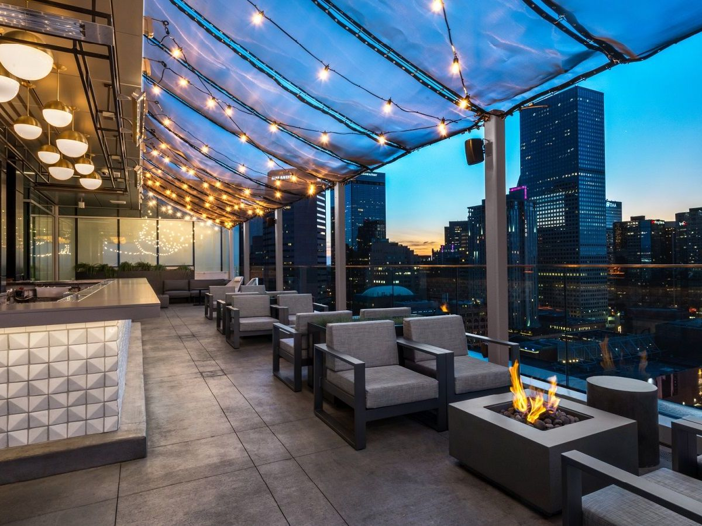

My trip to Colorado was eye-opening. My sister and I planned to go to Colorado for mountain hiking. During the week we were there we spent most of our time in Denver, the capital. It was very interesting because all around the city you could see the outlines of mountains. It looked so beautiful and felt as if we were in a sci-fi setting. Also the city had many different restaurants. The architecture was curious. There were many modern looking buildings, however the ground had a similar feel the cobblestones expect they were more neating arranged.
Eventually the day came where we hiked a mountain. My sister did all of the research as she had gone mountain hiking before. She wanted to hike a more challenging mountain from her first trip. So she decided we were going to hike a 14er which are mountains that are 14,000 feet high. The one she wanted to go to was Grays and Torreys Peak which are a set of mountains that connect to each other. We were initially going to start at the beginning of one mountain and go down the other if we had time. We ended up not reaching the top of Grays Peak. I think it was a good experience for me especially since it was my first time. Since it was my first time I didn't know what to expect and didn't train for it as much as I should have. I do have plans on returning and hiking more mountains and next time reaching the peak. Overall I loved the mountains they were a very beautiful sight.
I think the most interesting thing I experienced in Colorado were the people. I was expecting a similar interaction to the people as I had in St. Louis, especially when it came to customer experience. The customer service was not like the "Southern Hospitality" I was used to in St. Louis. Therefore the experiences I had in Colorado opened my mind up more to the differences in cultures per state. Whereas I previously have not thought about how each state differed from each other or didn't think that they did at all. Now I think I am more attentive to the different cultures when I travel in the states.
A restaurant in Denver with a view.
Future States and Countries
A few of the states I've visited were Ohio, Illinois, Florida, and California. Besides Colorado, California ranks among my top three states I've been to. I would love to go to Rhode Island to experience Necromicon and to potentially visit the home of H.P Lovecraft. I would also like to go to Nevada to see the nature in that state as well as to hit up Las Vegas. I would also love to go to Kansas to visit where the Wizard of Oz® was filmed. Some countries I would like to visit are Mexico, Spain, Russia, Turkey, Greece, Japan, and Scotland. I would love to see the beautiful sights in Mexico and Spain as well as in Russia. In Mexico I would like to climb Machu Picchu and learn the history in that area. I've also heard that there was a restaurant in Mexico that makes traditional food and the recipes and methods have been passed down from generation to generation. The restaurant makes everything by hand and is not open to large number of tourists. In Spain I would like to go and do the famous bull run. In Russia I would like to visit St. Basil's Cathedral, because it looks really cool. Whenever I get the opportunity to go to Turkey I would love to see the Hagia Sophia. It was a church turned mosque turned museum. I have always wanted to go and learn the history of such a fascinating building ever since I've read about it in school. In Greece I would love to see the houses because many of the houses are blue and white and are at an incline. So whenever I saw aerial views of the houses they looked like a really cool and beautiful scene to witness when walking the island. They also reminded me of the architecture in Serbia and the different colors of the buildings made them appear cooler to me. In Japan I would like to visit the hot springs as well as go to a local ramen shop. I would love to explore Shinjuku and go to a themed cafe. Since I am a big fantasy fan it would be cool to find and go to a Harry Potter® or Lord of the Rings® themed cafe. I have always loved gaelic songs and the folktales from Scotland. Also the highlands look gorgeous and like they would be a fun time to hike and explore that is why it was always in my plans to travel to Scotland. I have also always wanted to try haggis. My plans for the countries are for the future, however I am looking forward to going to the different states much sooner.